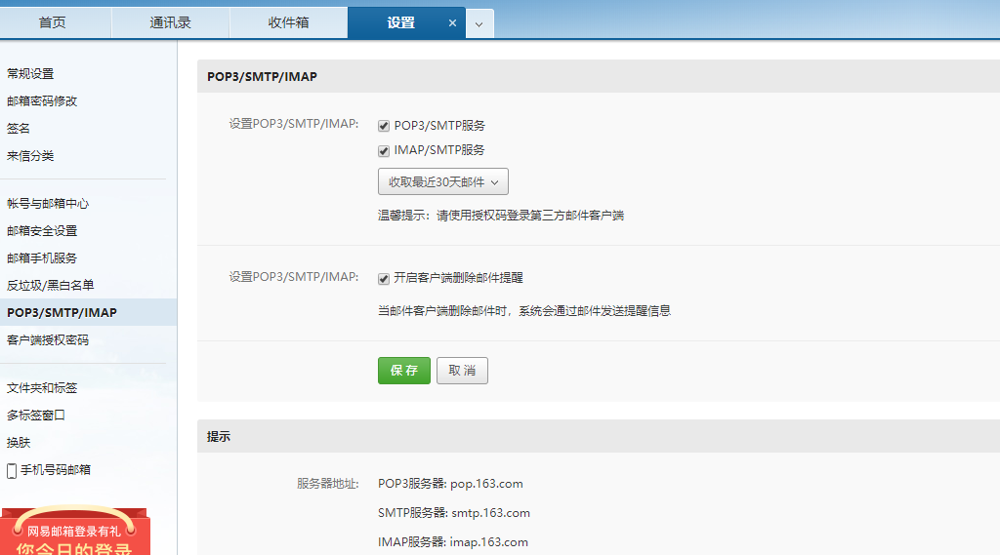
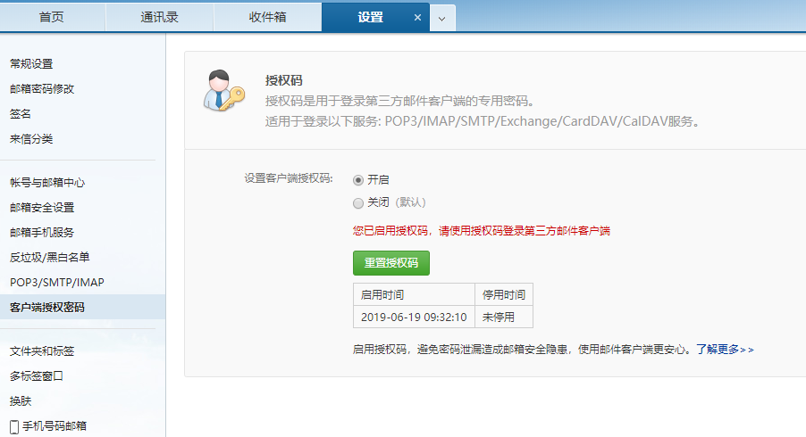
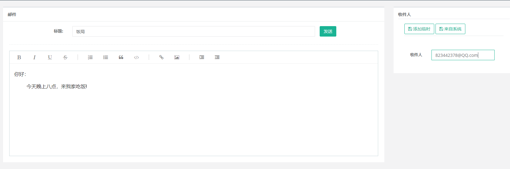

原文出处:本文由博客园博主L_Wayne提供。
原文连接:https://www.cnblogs.com/L-Wirepuller/p/11415652.html
原文连接:https://www.cnblogs.com/L-Wirepuller/p/11415652.html
目录
Java实现发邮件功能
前言
电子邮件的应用场景非常广泛，例如新用户加入，即时发送优惠清单、通过邮件找回密码、监听后台程序，出现异常自动邮件通知等。
本文以网易邮箱为例，通过Java代码实现发送邮件功能。
开发环境
请参照: 基于SpringBoot构建分模块项目
代码
pom.xml引入依赖
<properties> <java.version>1.8</java.version> <!-- 你的其他依赖... --> <javax.mail.version>1.6.0</javax.mail.version> </properties> <dependencies> <!-- 你的其他依赖... --> <!-- 发送短信 --> <dependency> <groupId>com.sun.mail</groupId> <artifactId>javax.mail</artifactId> <version>${javax.mail.version}</version> </dependency> </dependencies>发送邮件工具类
package com.wayne.common.utils; import com.wayne.common.entity.CmsMailConfig; import com.wayne.common.vo.MailVo; import org.springframework.beans.factory.annotation.Autowired; import org.springframework.stereotype.Component; import javax.mail.*; import javax.mail.internet.InternetAddress; import javax.mail.internet.MimeMessage; import java.util.Date; import java.util.Properties; /** * 发送邮件工具类 * @author Wayne * @date 2019/6/19 */ @Component public class MailUtils { /** * 发送邮件 * @param isSingle 是否单发: true-单发 false-群发 * @param mailVo 邮件内容 * @param sendTime 发送时间, 如果为null，表示立即发送 * @param mailConfig 发件人信息及授权 */ public void sendMail(Boolean isSingle, MailVo mailVo, Date sendTime, CmsMailConfig mailConfig) throws MessagingException { Session session = this.authenticationMail(); MimeMessage message = getMimeMessage(isSingle, session, mailConfig.getMailAccount(), mailVo.getRecipients()); message = getContent(message, mailVo.getMailTiTle(), mailVo.getMailContent(), sendTime); Transport transport = session.getTransport(); transport.connect(mailConfig.getMailAccount(), mailConfig.getMailLicense()); transport.sendMessage(message, message.getAllRecipients()); transport.close(); } /** * 校验发送的邮件内容 */ private MimeMessage getContent(MimeMessage message, String messageTitle, String messageContent, Date sendTime) throws MessagingException { if (null == messageTitle) { throw new MessagingException("邮件标题不能为空"); } if (null == messageContent) { throw new MessagingException("邮件内容不能为空"); } sendTime = sendTime == null ? new Date() : sendTime; message.setSubject(messageTitle, "UTF-8"); message.setContent(messageContent, "text/html;charset=UTF-8"); message.setSentDate(sendTime); return message; } /** * 验证认证信息 */ private Session authenticationMail() throws MessagingException { Session session; try { Properties props = new Properties(); //设置用户的认证方式 props.setProperty("mail.smtp.auth", "true"); //设置传输协议 props.setProperty("mail.transport.protocol", "smtp"); //设置发件人的SMTP服务器地址 props.setProperty("mail.smtp.host", "smtp.163.com"); session = Session.getInstance(props); session.setDebug(true); } catch (Exception e) { e.printStackTrace(); throw new MessagingException("认证失败"); } return session; } /** * @param isSingle 是否单发 * <P>true-向指定的一个收件人发送邮件，比如:找回密码、登录验证 * <P>false-向多个收件人群发邮件，比如:优惠活动推送 * <P>群发时多个收件人之间用英文逗号','分割 * @param senderAddress 发件人地址 * @param recipientAddress 收件人地址 */ private MimeMessage getMimeMessage(Boolean isSingle, Session session, String senderAddress, String recipientAddress) throws MessagingException { MimeMessage message = new MimeMessage(session); try { message.setFrom(new InternetAddress(senderAddress)); } catch (MessagingException e) { throw new MessagingException("发件人地址错误"); } /* 设置收件人地址 MimeMessage.RecipientType.TO:发送 MimeMessage.RecipientType.CC：抄送 MimeMessage.RecipientType.BCC：密送 */ if (isSingle) { message.setRecipient(MimeMessage.RecipientType.TO, new InternetAddress(recipientAddress)); } else { message.setRecipients(Message.RecipientType.TO, InternetAddress.parse(recipientAddress)); } return message; } }邮件内容对象-MailVo
package com.wayne.common.vo; import lombok.Data; /** * @author Wayne * @date 2019/6/24 */ @Data public class MailVo { /** * 邮件标题 */ private String mailTiTle; /** * 邮件内容 */ private String mailContent; /** * 收件人(们) */ private String recipients; }发件人信息及授权
注: 此处我假定有多个发件人，且不确定，可以动态添加、选择由哪个发件人发送，因此我将发件人信息存储在数据库中。假如你的应用中发件人是固定的，则此处可写在项目中或配在配置文件！
我们正常发送邮件时需要输入密码，登录我们的邮箱账户。而通过程序发送邮件不需要密码登录，而是使用授权码，网易邮箱授权码获得方式如下
- 启用授权

- 获得授权码

package com.wayne.common.entity; import lombok.Data; import javax.persistence.*; @Data @Table(name = "cms_mail_config") public class CmsMailConfig { /** * 主键 */ @Id @Column(name = "MAIL_ID") private Integer mailId; /** * 邮箱账号 */ @Column(name = "MAIL_ACCOUNT") private String mailAccount; /** * 授权码 */ @Column(name = "MAIL_LICENSE") private String mailLicense; /** * 状态，0：使用，1：未使用 */ @Column(name = "IS_USE") private String isUse; /** * 是否删除，0：否，1：是 */ @Column(name = "IS_DELETE") private String isDelete; /** * 创建者ID */ @Column(name = "CREATE_ADMIN_ID") private Integer createAdminId; @Column(name = "EXTEND1") private String extend1; @Column(name = "EXTEND2") private String extend2; @Column(name = "EXTEND3") private String extend3; @Column(name = "EXTEND4") private String extend4; @Column(name = "EXTEND5") private String extend5; @Column(name = "EXTEND6") private String extend6; }Service
@Override public ResponseBean sendMails(MailVo mailVo) { if (null == mailVo) { return ResponseBean.createInstance(Boolean.FALSE, 400, "参数异常"); } // 获取当前正在使用的发件人配置 List<CmsMailConfig> mailConfigList = mailConfigMapper.selectCurrUseMailConfig(); if (null == mailConfigList || mailConfigList.size() != 1) { return ResponseBean.createInstance(Boolean.FALSE, 400, "参数异常"); } try { // 发送邮件 mailUtils.sendMail(Boolean.FALSE, mailVo, null, mailConfigList.get(0)); return ResponseBean.createInstance(); } catch (Exception e) { e.printStackTrace(); } return ResponseBean.createInstance(Boolean.FALSE, 400, "参数异常"); }Controller
@PostMapping("/mail/sendMails") public ResponseBean sendMails(MailVo mailVo) { return mailService.sendMails(mailVo); }
效果
此处发送为手动发送，主要体验代码功能。具体应用场景可根据实际生产环境，随机应变。比如：通过结合定时器任务，每天定时发送报表；检测用户登录地址不是常用地址时，自动发邮件通知用户；普通用户登录时，触发发送邮件向管理员等


结束语
本人已开通公众号，欢迎大家前来灌水